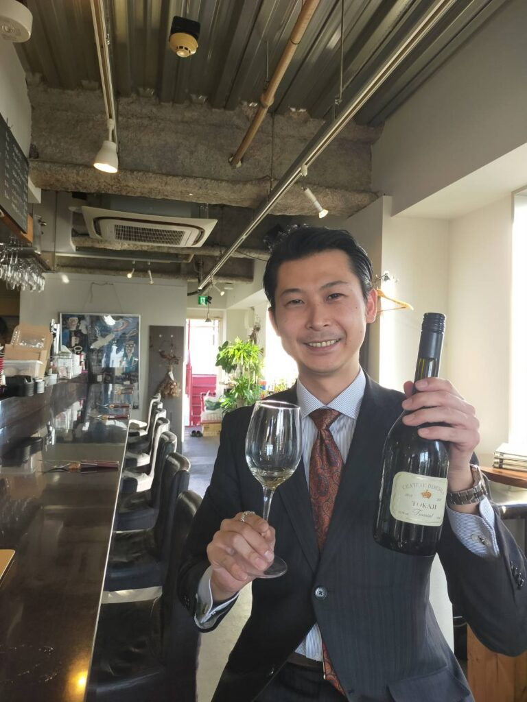

YUSHIMA, TOKYO
WINE BAR / YUSHIMA
tsuki-akari
月灯りのような、静かな一杯を。
湯島の街に佇む、小さなワインバー。選び抜いたワインと料理を通して、ソムリエ山崎の世界観を実際に体験できる場所です。
VISIT & INQUIRY ↗
TOKYO · YUSHIMA
ワインを、もっと自由に。
人生を、もっと豊かに。
ABOUT
SOMMELIER / TOKYO
東京・湯島を拠点に活動するソムリエ、山崎 翔。
ワインを単なる飲み物としてではなく、食、人、空間、そして音楽をつなぐ文化として捉え、その魅力を自由な感性で提案します。

WINE BAR / YUSHIMA
月灯りのような、静かな一杯を。
湯島の街に佇む、小さなワインバー。選び抜いたワインと料理を通して、ソムリエ山崎の世界観を実際に体験できる場所です。
VISIT & INQUIRY ↗WINE LIFESTYLE COMMUNITY
Wine × Food × Music × People
ワインをきっかけに、感性と価値観が響き合う。上質な時間を愉しむ大人のための、ワイン・ライフスタイルコミュニティです。
JOIN THE VIBE ↗SERVICES
WHAT I OFFER
PHILOSOPHY
ひとつのグラスを中心に、食があり、人がいて、音楽が流れ、空間が生まれる。
そこにあるすべてのつながりを大切にし、心に残る体験をつくります。
CONTACT
イベントのご相談、ソムリエサービス、飲食店コンサルティングなど、
まずはお気軽にお問い合わせください。
※ メールアドレスは公開時に正式なアドレスへ差し替えてください。